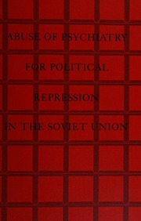
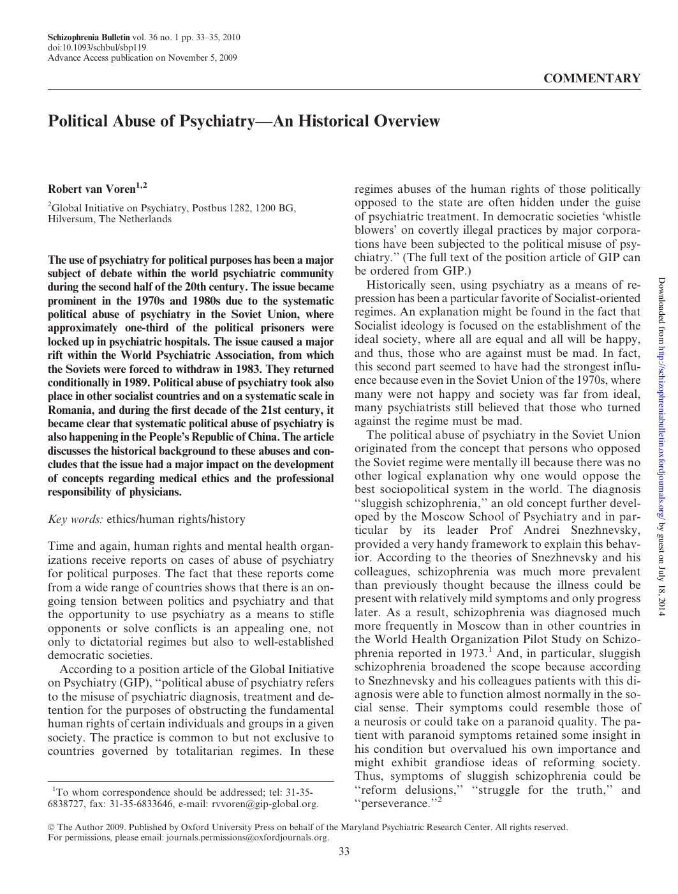
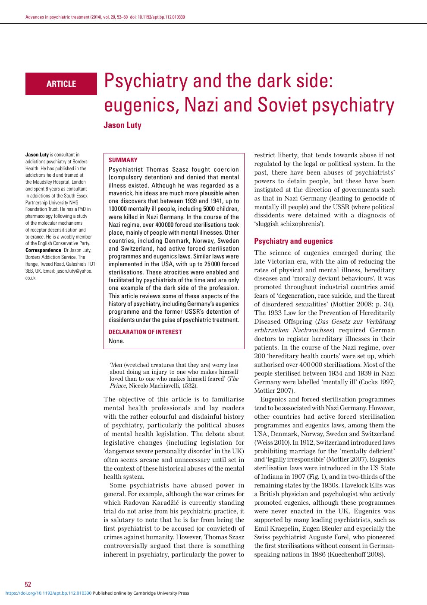
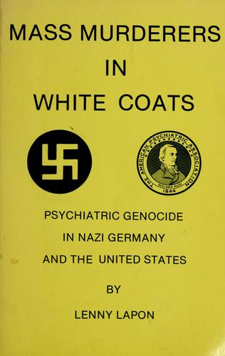
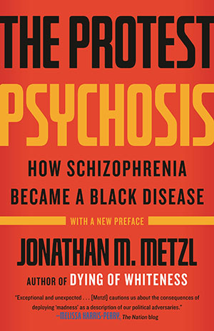

36:30 · 9 OPERE
La patologizzazione del dissenso.
Il filo del discorso
Il relatore critica la trasformazione del disaccordo politico in un presunto difetto mentale. Parte dall’uso della parola negazionista e contesta la sovrapposizione fra negazione dell’esistenza del coronavirus, valutazione del rischio e opposizione alle misure di governo. Un intervento televisivo sulla formazione delle credenze gli offre lo spunto per discutere autorità, rappresentazioni del cervello e prestigio degli esperti.
Leggi la sintesi completaRiduci la sintesi
Milgram e Asch sono richiamati per illustrare obbedienza e conformismo; il ragionamento fallace della strega dei Monty Python introduce la differenza fra una spiegazione e la sua apparenza. La seconda metà presenta libri, un’audizione parlamentare e articoli sull’abuso politico della psichiatria: Bloch e Reddaway, van Voren, Luty e Lapon conducono ai casi sovietico, nazista e statunitense. Nicola Pende apre una digressione italiana su biotipologia ed eugenetica. Seguono la storia dell’isteria, il rischio della lobotomia corso da Janet Frame e lo studio di Metzl sulle diagnosi razzializzate. La conclusione difende la libertà di ragionare e il confronto con la storia. La scheda distingue la documentazione di abusi specifici dalle analogie contemporanee proposte dal relatore, senza diagnosticare i suoi avversari né negare per questo l’esistenza delle malattie mentali.
I libri nel discorso
Monty Python and the Holy Grail
Identificazione probabile
Note sul riferimento
Locandina del film: Monty Python and the Holy Grail: Locandina promozionale del film del 1975, immagine ufficiale Sony Pictures. Non è una copertina libraria.
Locandina attualmente distribuita da Sony: titolo dorato, calice con i protagonisti, cielo blu e castello. Non è certificata come manifesto della prima uscita né come oggetto mostrato nel video.
Monty Python e processo alla strega espliciti; titolo non pronunciato, identificazione probabile del film del 1975.

Malleus Maleficarum (Il martello delle streghe)
Note sul riferimento
Copertina: The Hammer of Witches: A Complete Translation of the Malleus Maleficarum, traduzione di Christopher S. Mackay, Cambridge University Press, paperback 2009, 664 pagine; ISBN 9780521747875.
Copertina autentica della traduzione commentata inglese Cambridge 2009, nella quale Christopher S. Mackay è il traduttore e studioso dell’opera. Il nome in copertina non viene scambiato con quello dell’autore medievale; nessuna edizione è attribuita al video.
Malleus Maleficarum esplicito, senza pagina o edizione identificata.
Russia’s Political Hospitals. The Abuse of Psychiatry in the Soviet Union
Note sul riferimento
Copertina: Traduzione tedesca: Dissident oder geisteskrank? Mißbrauch der Psychiatrie in der Sowjetunion, Piper, 1978, 441 pagine. Originale Gollancz, Londra, 1977, 510 pagine; titolo americano Psychiatric Terror.
Fotografia autentica del volume Piper del 1978: copertina bianca, titoli nero e rosso, prefazione di Wladimir Bukowski. Il titolo tedesco è ricordato nel video; non si certifica che questa fotografia riproduca la stessa copia mostrata dal relatore.
Sidney Bloch, Reddaway, 1977, titolo inglese tradotto e titolo tedesco riconoscibili. Una sol’opera con titoli nazionali differenti.

Abuse of Psychiatry for Political Repression in the Soviet Union
Note sul riferimento
Copertina: Copertina della ristampa Arno Press, New York, 1973, iii + 257 pagine; riprende l’edizione U.S. Government Printing Office del 1972.
Copertina rossa autentica della ristampa Arno 1973, acquisita dall’esemplare Internet Archive. Titolo leggibile, autore istituzionale verificato sui cataloghi. Non è la copertina originale GPO del 1972 né il volume II del 1975.
Commissione giustizia del Senato statunitense, 1972, abuso della psichiatria per la repressione in URSS: audizione identificata del 26 settembre.

Political Abuse of Psychiatry—An Historical Overview
Note sul riferimento
Prima pagina dell’articolo: Robert van Voren, 2010: Prima pagina dell’articolo, Schizophrenia Bulletin 36(1), gennaio 2010, pp. 33–35; pubblicazione anticipata 5 novembre 2009, DOI 10.1093/schbul/sbp119.
Pagina editoriale 33 riprodotta integralmente da una copia del PDF, con titolo, autore, DOI e data anticipata verificati su PubMed e PMC. Non è una copertina libraria.
Robert van Voren e parole chiave ethics, human rights, history: corrispondenza con l’articolo di Schizophrenia Bulletin.

Psychiatry and the Dark Side: Eugenics, Nazi and Soviet Psychiatry
Note sul riferimento
Prima pagina dell’articolo: Jason Luty, 2014: Prima pagina dell’articolo, Advances in Psychiatric Treatment 20(1), gennaio 2014, pp. 52–60, DOI 10.1192/apt.bp.112.010330. La data online Cambridge 2018 non sostituisce quella del fascicolo.
Pagina editoriale 52 del PDF ufficiale Cambridge, riprodotta integralmente. È un articolo di rivista del 2014, non una monografia del 2018.
Titolo tradotto riconoscibile: psichiatria e lato oscuro, eugenetica, nazisti e psichiatria sovietica.

Mass Murderers in White Coats. Psychiatric Genocide in Nazi Germany and the United States
Note sul riferimento
Copertina: Psychiatric Genocide Research Institute, Springfield, Massachusetts, 1986, x + 291 pagine.
Copertina gialla autentica dell’edizione 1986, con titolo, sottotitolo e autore interamente leggibili. Le tesi antipsichiatriche del libro non sono adottate come conclusioni mediche della scheda.
Lapon e sottotitolo sul genocidio psichiatrico nella Germania nazista e negli Stati Uniti riconoscibili.
Bonifica umana razionale e biologia politica
Note sul riferimento
Copertina: Licinio Cappelli Editore, Bologna, 1933, 260 pagine, 19 cm; prima edizione senza ISBN.
Fotografia autentica della copertina originale Cappelli: titolo breve verde su nero, fondo rosso e medaglione con maternità. Il completamento e biologia politica è verificato sul catalogo, non aggiunto graficamente alla copertina.
Nicola Pende e Bonifica umana razionale espliciti; titolo completo verificato nel catalogo Gregoriana.

The Protest Psychosis. How Schizophrenia Became a Black Disease
Note sul riferimento
Copertina: Beacon Press, edizione paperback censita 12 aprile 2011, 288 pagine; opera originariamente pubblicata nel 2010.
Immagine attualmente fornita dal catalogo Beacon per il paperback: fondo rosso, titolo giallo e nero, autore, dicitura With a new preface e richiamo a Dying of Whiteness. La grafica è aggiornata rispetto alla prima uscita e non viene datata arbitrariamente al 2011 né attribuita alla copia del video.
La psicosi della protesta e il tema della schizofrenia attribuita agli afroamericani identificano il libro di Metzl.
Fonti e approfondimenti (19)
- blog.apaonline.org ↗
- digitalcollections.ohsu.edu ↗
- encyclopedia.ushmm.org ↗
- irbmember.web.unc.edu ↗
- lawcat.berkeley.edu ↗
- oseegenius.unigre.it ↗
- pdodds.w3.uvm.edu ↗
- pmc.ncbi.nlm.nih.gov ↗
- pubmed.ncbi.nlm.nih.gov ↗
- pubmed.ncbi.nlm.nih.gov ↗
- pubmed.ncbi.nlm.nih.gov ↗
- teara.govt.nz ↗
- beacon.org ↗
- frontiersin.org ↗
- la7.it ↗
- nlm.nih.gov ↗
- treccani.it ↗
- treccani.it ↗
- uniba.it ↗